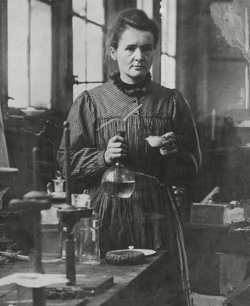

About Marie Curie
Marie Curie was a brilliant physicist and chemist who lived from 1867 to 1934. She conducted pioneering research on radioactivity that changed modern science forever. Her most famous inventions and discoveries include isolating pure radium and polonium. She remains one of the most celebrated scientists in history.
Life and Legacy

- Born in Warsaw, Poland in 1867.
- Moved to Paris in 1891 to study at the Sorbonne.
- Won her first Nobel Prize in Physics in 1903.
- Won her second Nobel Prize in Chemistry in 1911.
- Passed away in 1934 due to prolonged radiation exposure.
- Discovered the chemical elements polonium and radium.
- Developed the theory of radioactivity.
- Created mobile X-ray units used during World War I.
You can read more about her life on the Marie Curie Wikipedia Page or visit the Official Nobel Prize Website.
Learn more